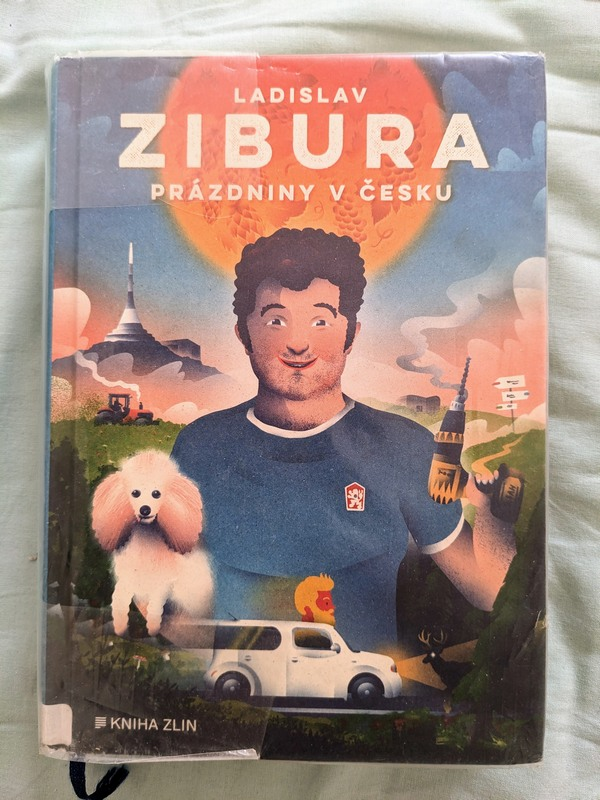
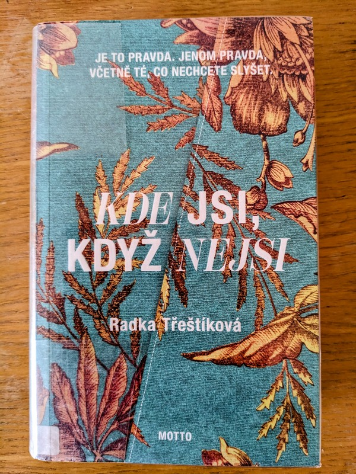
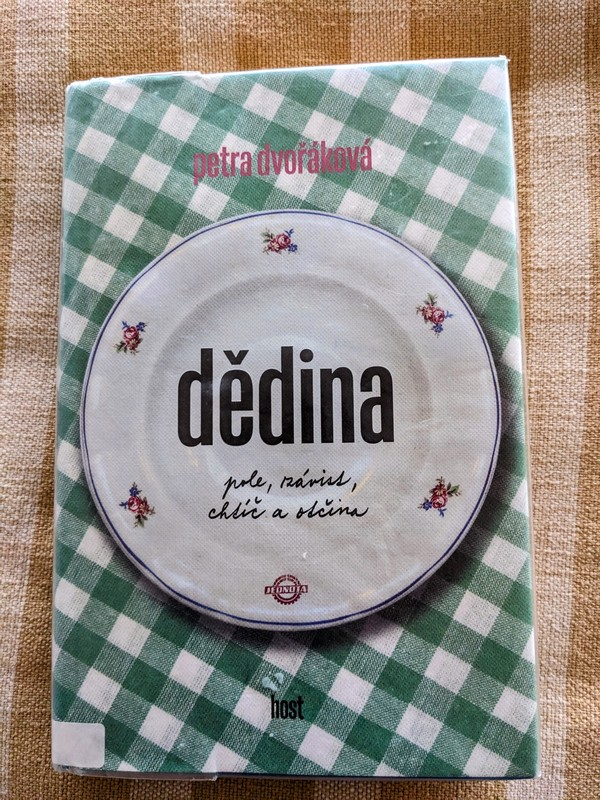
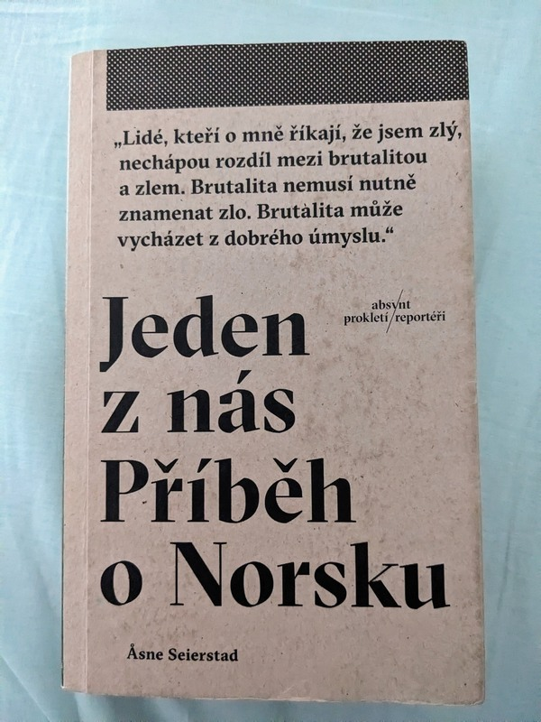
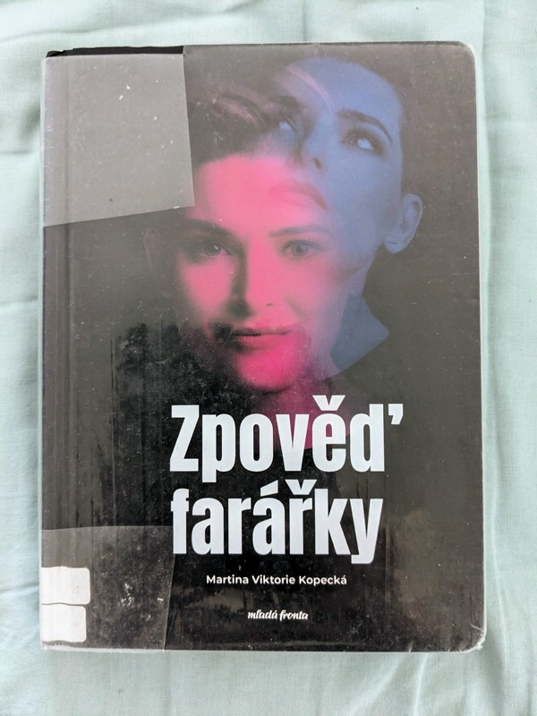
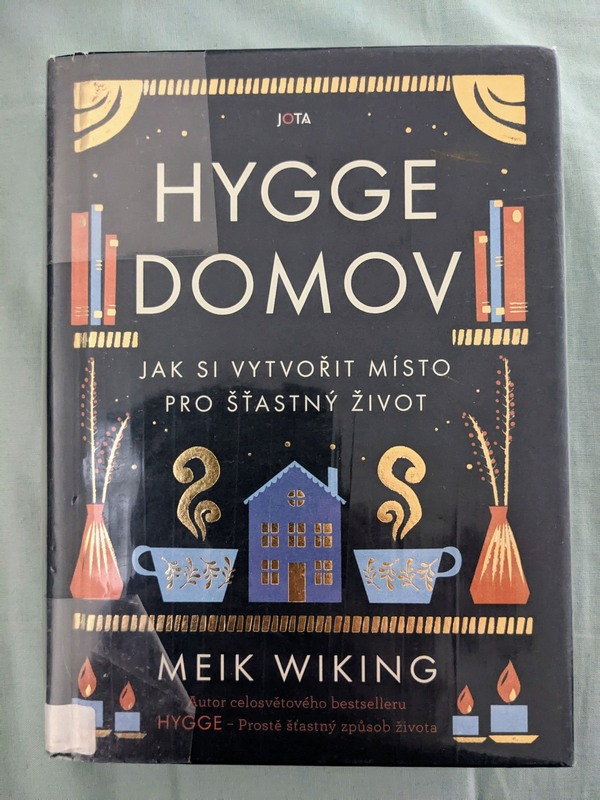
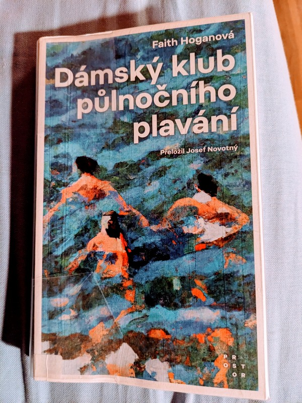
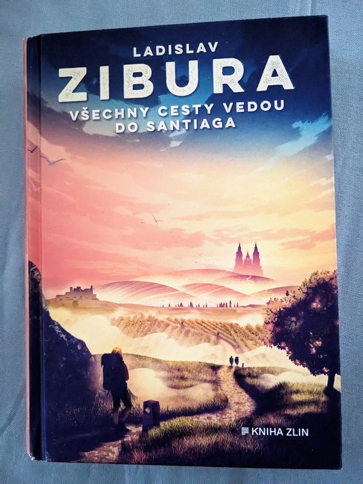
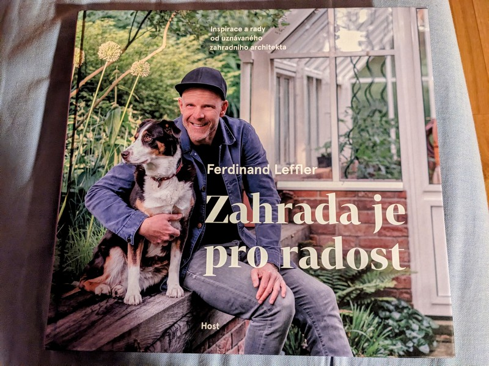

Tenhle podzim nám tedy skrze různé nemoci a rýmičky dal docela zabrat. Knih, které mi zpříjemňovaly odpočinek v posteli (pokud se zrovna zadařilo) nebo cesty do práce (když jsem zrovna nemusela trčet na home officu nebo doma s marodem), se ale opět sešlo celkem dost, tak nechť slouží jako fajn inspirace všem, kteří zrovna taky bojují s bacily a hledají nějaké lehké rozptýlení :-)
Ladislav Zibura - Prázdniny v Česku
Láďa Zibura nikdy nezklame a ani tomuto vyprávění o cestování po českých luzích a hájích, které podniknul za časů covidových restrikcí, nechybí nic z toho, co mám na jeho textech ráda - vtip, poučení, trocha dobrodružství (třeba při přespávání na “strašidelném” hradě) i půvabné ilustrace.

Radka Třeštíková - Kde jsi, když nejsi
Zvláštní kniha, kterou předcházela její bulvární pověst, je netypická už přeházeným pořadím kapitol, což na začátku, než si zapamatujete všechny postavy a pochopíte, kdo je kdo, do příběhu vnáší celkem zmatek. Cítím v tom určitou snahu o originalitu, ale nevím, jestli to knize spíš neškodí než naopak. Co se týče příběhu o matce od rodiny, poblázněné o dost mladším chuligánem… přestože jsem hlavní postavě v mnohém rozuměla, nepřišlo mi její chování absolutně uvěřitelné a dost mě drásalo přihlížet jejímu osudu, který podle mě měla vzít do svých rukou úplně jiným způsobem. To by pak ale asi nebylo o čem psát, že. Nevím, no - fanynka Radky Třeštíkové ze mne asi nebude.

Petra Dvořáková - Dědina
Dědina mě naopak bavila moc. Pokud od toho nečekáte nějakou závratnou pointu, ale pouze věrohodné vykreslení života na dědině včetně jeho četných nešvarů tak, jak to zažila sama autorka knihy, určitě nebudete zklamaní.

Åsne Seierstad - Jeden z nás (Příběh o Norsku)
Pokud bych měla vybrat z nakladatelství Absynt jedinou knihu, kterou bych vám doporučila k přečtení, byla by to tato. Tématem knihy je teroristický útok pravicového extremisty Anderse Breivika v Osle a na norském ostrově Utøya, autorka jde ale skutečně do hloubky a čtenáře seznamuje i s politickou historií Norska a celkovým kontextem útoku. Kniha se skládá z mnoha linií, které mají jedno smutné vyústění. Sledujeme tak životní příběhy několika obětí i přeživších a okolnosti, které je přivedly v nesprávnou chvíli na nesprávné místo – tedy do tábora mladých socialistů na ostrov Utøya. Velmi zevrubně se autorka věnuje útočníkovu dětství a dospívání, kde je jasně vidět, v co může vyústit labilní rodinné zázemí a role celoživotního outsidera, a že se to může stát opravdu kdekoliv. S postupem času, kdy autorka popisuje Breivikovo plánování útoku a přípravy na něj, napětí v knize graduje až na pomyslnou hranici snesitelnosti a přestože čtenář samozřejmě ví, k jaké události kniha směřuje, do poslední chvíle doufá, že to nějakým zázrakem dopadne jinak. Není to lehké čtení. Obzvlášť ne po tom, co se před necelým rokem odehrálo na pražské filozofické fakultě. Přesto je Jeden z nás v lecčem oči otevírající kniha. Důležitý a široce pojatý rozbor toho, co se v Norsku v roce 2011 odehrálo, co tomu předcházelo i co následovalo. Autorka odvedla naprosto precizní novinářskou práci, kniha je velmi obsáhlá a přesto v ní není ani slovo navíc. Pokud téma unesete, velmi doporučuji k přečtení.

Martina Viktorie Kopecká - Zpověď farářky
A ještě jedna kniha, tentokrát velmi neprávem vláčená bulvárem, přestože na ní vlastně nic skandálního není a celé je to trochu nafouknutá bublina. Naopak, Zpověď farářky je příjemné a hluboké čtení, které se týká nejen teologických témat a práce farářky se vším tím pozitivním, ale i negativním, co obnáší, ale dotkne se také témat jako je ženskost či osobní selhání.

Meik Wiking - Hygge domov
Hygge domov je taková veskrze zbytečná publikace, která je ale graficky tak krásná, že stojí za to si ji přečíst – zalézt si s ní do křesla, zachumlat se do deky, zapálit svíčku a popíjet u toho kakao :-D. Doma ji mít ale myslím nepotřebujete a hygge si určitě také vyrobíte i bez ní.

Faith Hoganová - Dámský klub půlnočního plavání
A toto bylo moc hezké čtení, takové literární pohlazení :-) Příběh tří žen, z nichž každá se svým způsobem ocitá na životní křižovatce, a které spojuje rituál půlnočního plavání v chladném moři omývajícím břehy Irska. Už jen divoká irská příroda, do níž je příběh Jo, Elizabeth a Lucy umístěn, vytváří polovinu okouzlující atmosféry. Autorka píše s lehkostí a přestože je příběh o neveselých věcech, netlačí na pilu, nesnaží se ze čtenáře ždímat emoce, což velmi oceňuji. Až na ten lehce nepravděpodobný a přesto předvídatelný závěr, kde přece jen nějaké to klišé přijde, což mě malinko mrzí. I tak se mi ale Dámský klub půlnočního plavání moc líbil a ráda si od autorky přečtu i něco dalšího.

Ladislav Zibura - Všechny cesty vedou do Santiaga
Camino je jednoduše plné protikladů. V něčem skvělé a v něčem pěkně otravné. Přesně jako život. A během putování můžete pozorovat, jak k téhle výzvě přistupují lidé kolem vás. Někdo jenom remcá a někdo se pořád směje. Cesta je přitom pro každého stejná.
Pokud stejně jako já s Láďou Ziburou a jeho knihami stárnete, nemůžete si nevšimnout, že jeho poslední kniha o cestě do Santiaga je jiná. Hlubší. Nemusíte se bát, že by zde chyběl ten typický humor z ostatních Láďových cestopisů, ale osobně mám pocit, že je tady jinak dávkovaný. Tento příběh se čte prostě JINAK, s menší lehkostí. To ale vůbec není na škodu – myslím, že je to jen odraz autorova vývoje a hlavně životních peripetií, kvůli kterým se na camino vydává, jak se záhy čtenář dozví. Ostatně není sám – kniha je silných životních příběhů ostatních poutníků, které autor na svém caminu potkává, plná. Až tolik, že se vám občas všechny ty postavy možná budou plést a budete tápat, kdo je kdo :-) Kniha je i přes svůj ponurejší podtext pozitivní a uchovává si nadějeplné vyznění, a to mě těší. Nemůžu se dočkat další Láďovy cesty a jeho literárního zpracování – teď už možná s celou jeho čerstvě se rozrostlou rodinkou ;-)

Ferdinand Leffler - Zahrada je pro radost
Poslední z trilogie Ferdinandových zahradnických “biblí” si za mne stojí, co se týče užitečnosti informací, tak někde v průměru - 50% knihy tvoří krásné a jistě i inspirativní fotky realizací, nicméně pravda je, že některé snímky se dost opakují a pokud Ferdinanda sledujete i na jiných platformách, asi vám budou povědomé. Za mne tedy kniha nepřináší zas tolik nového a pevně věřím, že celý kurz Žijte ve své zahradě (až ho tedy s Péťou konečně zdárně dokončíme) nám ve výsledku přinese víc, než všechny knihy dohromady.

A to už je z mé podzimní knihovničky všechno :-) Na viděnou zase u příštího čtvrtletního shrnutí!